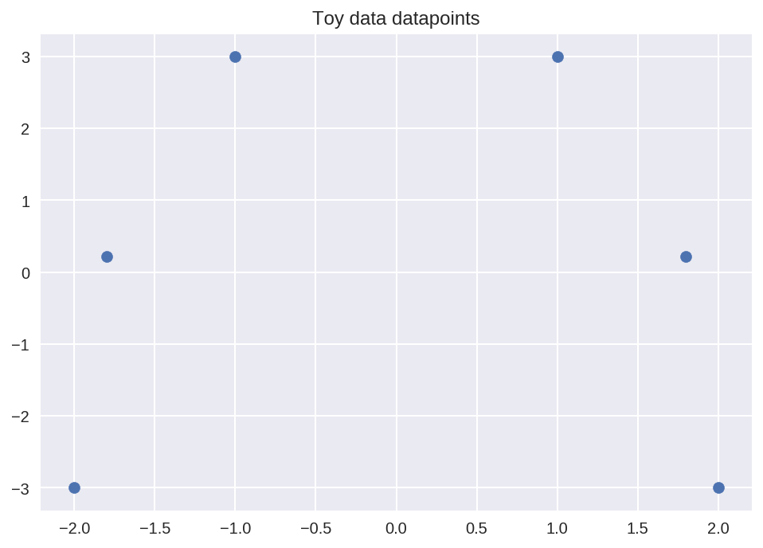
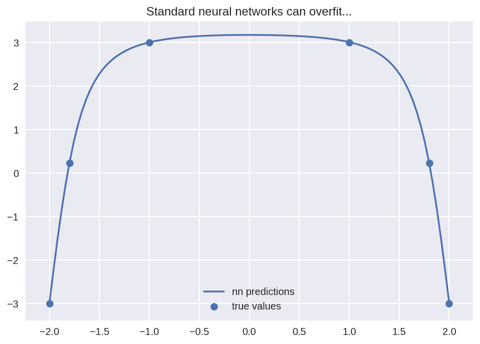
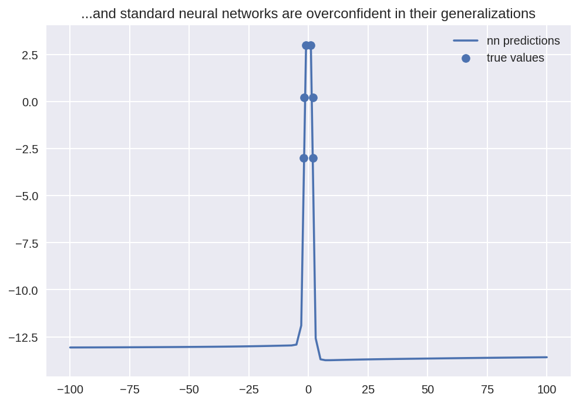
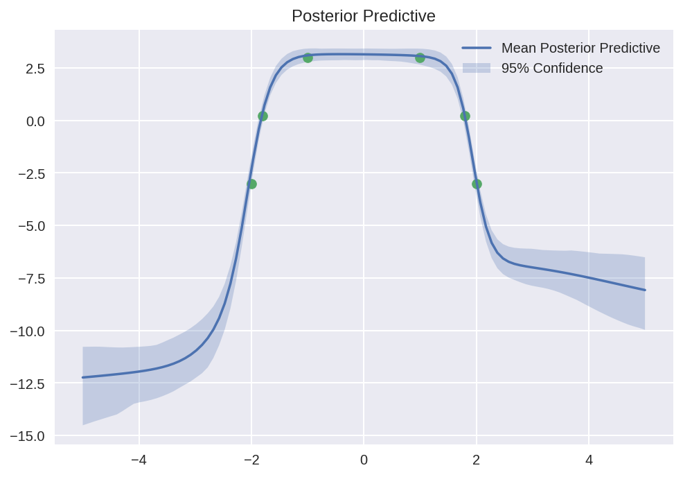
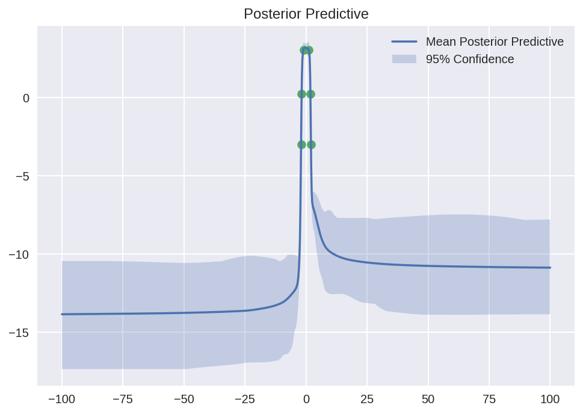
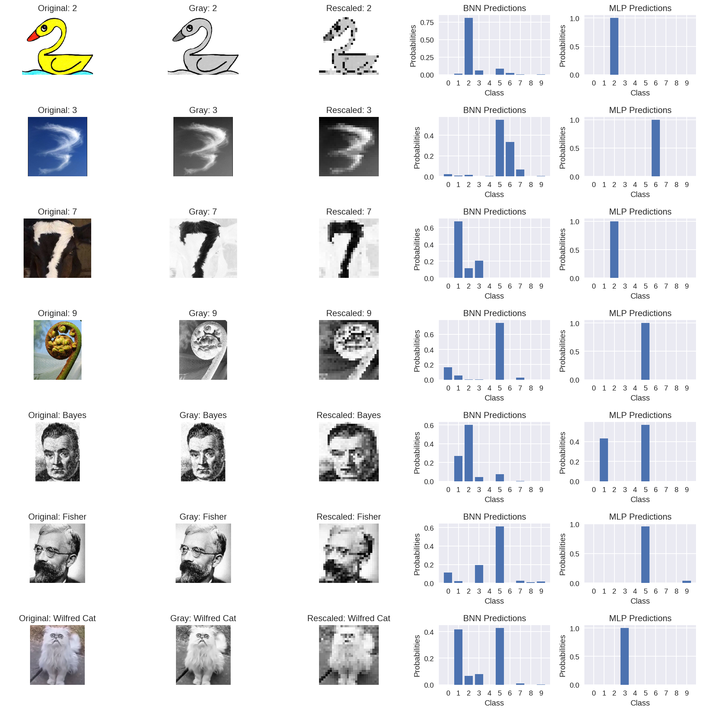
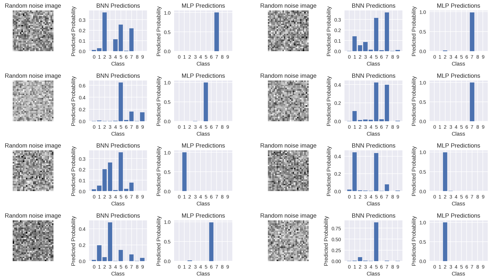

Bayes By Backprop
Bayes by Backprop is an algorithm for training Bayesian neural networks (what is a Bayesian neural network, you ask? Read more to find out), which was developed in the paper “Weight Uncertainty in Neural Networks” by Blundell et al. We will be using pytorch for this tutorial along with several standard python packages. I put this tutorial together with Joe Davison, Lucie Gillet, Baptiste Lemaire, and Robbert Struyven.
import torch
import torch.nn as nn
import torch.nn.functional as F
import torch.optim as optim
from torch.distributions import Normal
import numpy as np
from scipy.stats import norm
import matplotlib.pyplot as plt
%config InlineBackend.figure_format = 'retina'
Why do we need Bayesian Neural Networks
There are three big problems with standard neural networks, which we’ll show with an example. Imagine you’re trying to fit a function to the following 6 datapoints.
def toy_function(x):
return -x**4 + 3*x**2 + 1
# toy dataset we can start with
x = torch.tensor([-2, -1.8, -1, 1, 1.8, 2]).reshape(-1,1)
y = toy_function(x)
plt.scatter(x, y)
plt.title('Toy data datapoints')
plt.show()

Let’s see what happens when we fit a standard multilayer perception with 2 layers and 8 hidden units each. Don’t worry too much about the code here - this is just to illustrate the behaviour of a typical neural network.
Define standard MLP
class standard_MLP(nn.Module):
def __init__(self):
super().__init__()
self.l1 = nn.Linear(1,16)
self.l2 = nn.Linear(16,16)
self.l3 = nn.Linear(16,1)
def forward(self, x):
x = self.l3(F.sigmoid(self.l2(F.sigmoid(self.l1(x)))))
return x
# initialization of our standard neural network
net1 = standard_MLP()
# use of a Mean Square Error loss to evaluate the network because we are in a regression problem
criterion = nn.MSELoss()
# use of stochastic gradient descent as our optimizer
optimizer = optim.SGD(net1.parameters(), lr=0.01)
# number of times we are looping over our data to train the network
epochs = 30000
for epoch in range(epochs):
optimizer.zero_grad() # zero the gradient buffers
output = net1(x) # pass the data forward
loss = criterion(output, y) # evaluate our performance
if epoch % 5000 == 0:
print("epoch {} loss: {}".format(epoch,loss))
loss.backward() # calculates the gradients
optimizer.step() # updates weigths of the network
epoch 0 loss: 6.118632793426514
epoch 5000 loss: 0.5939443111419678
epoch 10000 loss: 0.15989504754543304
epoch 15000 loss: 0.014005806297063828
epoch 20000 loss: 0.0007411101832985878
epoch 25000 loss: 4.190066101728007e-05
x_test = torch.linspace(-2,2,100).reshape(-1,1)
predictions = net1(x_test)
plt.plot(x_test.numpy(), predictions.detach().numpy(), label = 'nn predictions')
plt.scatter(x, y, label = 'true values')
plt.title('Standard neural networks can overfit...')
plt.legend()
plt.show()

A perfect fit! But that is not necessarily a good thing. For instance, we are fitting an essentially straight line between and . The curved nature of the data suggests that this might not be correct. We are overfitting to the 6 data points. More worrying, look what happens when we extend our predictions beyond the range of our data.
x_test = torch.linspace(-100,100,100).reshape(-1,1)
predictions = net1(x_test)
plt.plot(x_test.numpy(), predictions.detach().numpy(), label = 'nn predictions')
plt.scatter(x, y, label = 'true values')
plt.title('...and standard neural networks are overconfident in their generalizations')
plt.legend()
plt.show()

The neural network predicts -13 for $x = 100$, but there isn’t a data point in sight. We’d ideally want the uncertainty of our neural network to increase as it makes predictions further from the observed data. To summarize, there are three drawbacks of traditional neural networks:
- The risk of overfitting your data
- The lack of knowledge on how confident we are on our predictions
- Overconfident generalization in areas without any data
What are Bayesian Neural Networks?
Bayesian neural networks solve these two problems by:
- Regularizing the network in a principled way
- Predicting distributions instead of values which allows us to measure uncertainty and identify unfamiliar inputs
To explain what a Bayesian neural network is, we need to rethink the usual machine learning problem framework. Typically, we are provided with a dataset $\mathcal{D} = \{x_i, y_i\}$ and we choose a model $f(X \vert w) = Y$ that is parameterized by weights $w$. To train our model, we adjust the weight to minimize a loss function $\mathcal{L}(f(X),Y)$.
As opposed to optimizing a loss function, bayesian neural networks take an explicitly probabilistic approach. Instead of assigning each weight $w_i$ as a single number, we model them with a probability distribution. The task is to find the probability distribution $P(w \vert \mathcal{D})$, which is called the posterior distribution. In other words, given our data, what are the weights of the neural network likely to be.
What do Bayesian Neural Networks Predict?
To make a “prediction” with a bayesian neural network, we are actually estimating an expected value $\mathbb{E}_{P(w \vert \mathcal{D})}\left[P(y \vert x, w)\right]$. Since the weights are now random variables, our “predictions” must be random variables too. If we want to make a single prediction as we did in the frequentist case, we calculate the expected value of $y$ given our final distributions over the weights, which in turn are dependent on our data.
We’ll use computers and not algebra to do this (as we’ll see in a moment, the math is too hard). In the same way that you estimate the expected value of a die by rolling it a bunch of time and averaging the values, we can estimate $\mathbb{E}_{P(w \vert \mathcal{D})}\left[P(y \vert x, w)\right]$ by sampling from the posterior distribution $P(w \vert \mathcal{D})$ and for each sample, calculate $f(X \vert w)$, where $f$ is our neural network as before. Finally, we average all of these estimates.
Since our network outputs distributions rather than single values, it can communicate its certainty.
Training Bayesian Neural Networks
Attempt 1: Analysis
Now comes the tricky part: actually finding $P(w \vert \mathcal{D})$ . To write an explicit formula for the posterior, we would need to integrate over all possible neural network weights . Not gonna happen.
Attempt 2: Sampling
Another approach we could take is sampling from $P(w \vert \mathcal{D})$. This, however, would require sampling from a distribution with as many dimensions as there are neural network parameters. Neural networks often have thousands, if not millions, of parameters. Again, not gonna happen.
Attempt 3: Variational Inference
This leads us to variational inference and, in particular, Bayes by Backprop.
Instead of trying to sample from a horrible multi-dimensional posterior, what if we approximate the posterior with a bunch of simple distributions?
Specifically, let’s approximate each weight $w_i$ with a normal distribution with mean $\mu_i$ and standard deviation $\sigma_i$. We’ll denote all of these new parameters as $\theta = (\mu, \sigma)$, which defines a distribution over all the weights $q(w \vert \theta)$. Below is an image illustrating this idea. Notice that each weight $w_i$ is sampled from a normal distribution with mean $\mu_i$ and variance $\sigma_i$.

We can’t just pick any $\mu$’s and $\sigma$’s - we need the distribution $q(w \vert \theta)$ to be “close” to our ultimate goal $P(w \vert \mathcal{D})$. We can formalize this notion of “closeness” with the Kullback-Leibler (KL) divergence, which measures something like a distance between two distributions. Our goal, therefore, will be to minimize the KL divergence between $q(w \vert \theta)$ and $P(w \vert \mathcal{D})$. Written out in math, we are looking for $\theta^*$ such that,
While variational inference forces us to make an approximation, a huge benefit of this approach is that we are back in the familiar optimization territory of machine learning.
Attempt 3.5: Bayes By Backprop
If we are optimizing parameters of a neural network (remember, these are parameters of the distributions of the weights), the natural question is if we can use backpropogation to do so. “Weight Uncertainty in Neural Networks” says almost.
Here’s the issue. Let’s write out the KL divergence between $q(w \vert \theta)$ and $P(w \vert \mathcal{D})$.
Let’s pause for a moment to understand the probabilities inside the expectation.
- $q(w \vert \theta)$ is the distribution of the weights given the parameters of the normal distribution that define them.
- $P( \mathcal{D} \vert w)$ is the likelihood of observing our data given our weights (to calculate this we’ll need to compare our predictions to the actual data).
- $P(w)$ is the prior we choose for the weights, which allows us to regularize our neural network in a principled way.
Note: the negative of the value inside the expectation is called the evidence lower bound or the ELBO.
Nevertheless, we’ve hit a road block. If we want to use back propagation to minimize the KL divergence with respect to $\theta$, we’ll need to take a derivative of an expectation. The authors of “Weight Uncertainty in Neural Networks” suggest a neat trick to do this. We reparameterize our weights to be $w_i = \mu_i + \sigma_i \times \epsilon_i$ where $\epsilon_i \sim \mathcal{N}(0,1)$. We can swap the derivative and the expectation because $w_i$ is a deterministic function of $\mu_i$ and $\sigma_i$ given $\epsilon_i$. In math this can be stated as:
Notice that the expectation is with with respect to $\epsilon$ instead of $\theta$.
This means we can estimate the gradient of the KL divergence with respect to $\theta$ by taking the average of $\frac{\partial}{\partial \theta}\log\left[\frac{ q(w \vert \theta) }{P( \mathcal{D} \vert w)P(w)}\right]$ for multiple samples of $\epsilon \sim \mathcal{N}(0,1)$.
The Bayes by Backprop Algorithm
One last thing before we go over the algorithm. We need to reparameterize $\sigma$ to the entire real line, not just positive values. We define $\sigma = \log(1+e^\rho)$, which means that $\theta = (\mu, \rho)$ (to emphasize, $\theta \neq (\mu, \sigma)$).
At long last, here is bayes by backprop:
As we explain the algorithm, we will show a single update for the function $y = wx$ in code with parameters $(\mu, \rho) = (2,3)$, prior $\mathcal{N}(0,1)$, noise tolerance 0.5, and a single data point $(x,y) = (1,1)$
# initialize parameters
mu = torch.autograd.Variable(torch.Tensor([0.5]),requires_grad=True)
rho = torch.autograd.Variable(torch.Tensor([2]),requires_grad=True)
x = 2
y = 3
noise_tol = 0.5
prior = torch.distributions.Normal(0,1)
learning_rate = 0.01
- Sample $\epsilon \sim \mathcal{N}(0,1)$ for every weight
epsilon = Normal(0,1).sample()
print(epsilon)
tensor(1.9070)
- Let $w = \mu + \log(1+e^\rho)\times \epsilon$
w = mu + torch.log(1+torch.exp(rho)) * epsilon
print(w)
tensor([4.5561], grad_fn=<ThAddBackward>)
- Let $\mathcal{L} = \sum_i \log q(w_i \vert \theta_i) - \sum_i \log P(w_i) - \sum_j \log P(y_j \vert w, x_j)$ where $q(w_i \vert \theta_i)$ is the log probability of $w_i$ given the normal distribution generated by $\theta$, $\log P(w_i)$ is the log probability of seeing $w_i$ as dictated by the prior distribution, and $\log P(y_j \vert w, x_i)$ is the log probability of observing data point $y_j$ given the weights and $x_i$. Note that this is the term inside the expecation above (i.e. the negative ELBO).
# calculate variational posterior probability
log_variational_post = torch.distributions.Normal(mu, torch.log(1+torch.exp(rho)))
log_variational_post_prob = log_variational_post.log_prob(w)
print("Log Variational Posterior Prob:",log_variational_post_prob)
# calculate prior probablility
log_prior_prob = prior.log_prob(w)
print("Log Prior Prob:",log_prior_prob)
# calculate likelihood
y_pred = w*x
log_likelihood = torch.distributions.Normal(y_pred, noise_tol).log_prob(y)
print("Likelihood", log_likelihood)
# calculate negative ELBO
L = log_variational_post_prob - log_prior_prob - log_likelihood
print("Loss:",L)
Log Variational Posterior Prob: tensor([-3.4920], grad_fn=<SubBackward>)
Log Prior Prob: tensor([-11.2981], grad_fn=<SubBackward>)
Likelihood tensor([-74.9450], grad_fn=<SubBackward>)
Loss: tensor([82.7511], grad_fn=<ThSubBackward>)
- Use your favourite automatic differentiation package to calculate $\nabla_\theta \mathcal{L}$
L.backward()
print("mu grad:",mu.grad)
print("rho grad:",rho.grad)
mu grad: tensor([53.4541])
rho grad: tensor([89.3733])
- Update $\theta’ = \theta -\alpha \nabla_\theta \mathcal{L}$
print("old mu:",mu)
print("old rho:",rho)
mu = mu - learning_rate * mu.grad
rho = rho - learning_rate * rho.grad
print("new mu:",mu)
print("new rho:",rho)
old mu: tensor([0.5000], requires_grad=True)
old rho: tensor([2.], requires_grad=True)
new mu: tensor([-0.0345], grad_fn=<ThSubBackward>)
new rho: tensor([1.1063], grad_fn=<ThSubBackward>)
- Repeat 1-5 for a while
# see below!
Notice that we don’t actually take multiple samples of $\epsilon$ for a single gradient update and, instead, use only one realization. Over many interations, this shouldn’t be an issue.
Implementing Bayes By Backprop
We will use pytorch to implement the algorithm. First, we create a linear bayes by backprop layer, which will mimic the behaviour of a regular pytorch linear layer, but samples it’s outputs from probability distributions. Due to pytorch’s automatic differentiation functionality and our choice of parameterization, the gradients will be calculated automatically
class Linear_BBB(nn.Module):
"""
Layer of our BNN.
"""
def __init__(self, input_features, output_features, prior_var=1.):
"""
Initialization of our layer : our prior is a normal distribution
centered in 0 and of variance 20.
"""
# initialize layers
super().__init__()
# set input and output dimensions
self.input_features = input_features
self.output_features = output_features
# initialize mu and rho parameters for the weights of the layer
self.w_mu = nn.Parameter(torch.zeros(output_features, input_features))
self.w_rho = nn.Parameter(torch.zeros(output_features, input_features))
#initialize mu and rho parameters for the layer's bias
self.b_mu = nn.Parameter(torch.zeros(output_features))
self.b_rho = nn.Parameter(torch.zeros(output_features))
#initialize weight samples (these will be calculated whenever the layer makes a prediction)
self.w = None
self.b = None
# initialize prior distribution for all of the weights and biases
self.prior = torch.distributions.Normal(0,prior_var)
def forward(self, input):
"""
Optimization process
"""
# sample weights
w_epsilon = Normal(0,1).sample(self.w_mu.shape)
self.w = self.w_mu + torch.log(1+torch.exp(self.w_rho)) * w_epsilon
# sample bias
b_epsilon = Normal(0,1).sample(self.b_mu.shape)
self.b = self.b_mu + torch.log(1+torch.exp(self.b_rho)) * b_epsilon
# record log prior by evaluating log pdf of prior at sampled weight and bias
w_log_prior = self.prior.log_prob(self.w)
b_log_prior = self.prior.log_prob(self.b)
self.log_prior = torch.sum(w_log_prior) + torch.sum(b_log_prior)
# record log variational posterior by evaluating log pdf of normal distribution defined by parameters with respect at the sampled values
self.w_post = Normal(self.w_mu.data, torch.log(1+torch.exp(self.w_rho)))
self.b_post = Normal(self.b_mu.data, torch.log(1+torch.exp(self.b_rho)))
self.log_post = self.w_post.log_prob(self.w).sum() + self.b_post.log_prob(self.b).sum()
return F.linear(input, self.w, self.b)
Now that we’ve defined our bayes by backprop layer
class MLP_BBB(nn.Module):
def __init__(self, hidden_units, noise_tol=.1, prior_var=1.):
# initialize the network like you would with a standard multilayer perceptron, but using the BBB layer
super().__init__()
self.hidden = Linear_BBB(1,hidden_units, prior_var=prior_var)
self.out = Linear_BBB(hidden_units, 1, prior_var=prior_var)
self.noise_tol = noise_tol # we will use the noise tolerance to calculate our likelihood
def forward(self, x):
# again, this is equivalent to a standard multilayer perceptron
x = torch.sigmoid(self.hidden(x))
x = self.out(x)
return x
def log_prior(self):
# calculate the log prior over all the layers
return self.hidden.log_prior + self.out.log_prior
def log_post(self):
# calculate the log posterior over all the layers
return self.hidden.log_post + self.out.log_post
def sample_elbo(self, input, target, samples):
# we calculate the negative elbo, which will be our loss function
#initialize tensors
outputs = torch.zeros(samples, target.shape[0])
log_priors = torch.zeros(samples)
log_posts = torch.zeros(samples)
log_likes = torch.zeros(samples)
# make predictions and calculate prior, posterior, and likelihood for a given number of samples
for i in range(samples):
outputs[i] = self(input).reshape(-1) # make predictions
log_priors[i] = self.log_prior() # get log prior
log_posts[i] = self.log_post() # get log variational posterior
log_likes[i] = Normal(outputs[i], self.noise_tol).log_prob(target.reshape(-1)).sum() # calculate the log likelihood
# calculate monte carlo estimate of prior posterior and likelihood
log_prior = log_priors.mean()
log_post = log_posts.mean()
log_like = log_likes.mean()
# calculate the negative elbo (which is our loss function)
loss = log_post - log_prior - log_like
return loss
Train Net
We can now train our bayesian neural network on the toy data set and observe the differences between the Bayesian approach and the usual frequentist approach.
net = MLP_BBB(32, prior_var=10)
optimizer = optim.Adam(net.parameters(), lr=.1)
epochs = 2000
for epoch in range(epochs): # loop over the dataset multiple times
optimizer.zero_grad()
# forward + backward + optimize
loss = net.sample_elbo(x, y, 1)
loss.backward()
optimizer.step()
if epoch % 10 == 0:
print('epoch: {}/{}'.format(epoch+1,epochs))
print('Loss:', loss.item())
print('Finished Training')
epoch: 1/2000
Loss: 3808.865478515625
...
epoch: 1991/2000
Loss: 278.11016845703125
Finished Training
Done training! Let’s see our results
# samples is the number of "predictions" we make for 1 x-value.
samples = 100
x_tmp = torch.linspace(-5,5,100).reshape(-1,1)
y_samp = np.zeros((samples,100))
for s in range(samples):
y_tmp = net(x_tmp).detach().numpy()
y_samp[s] = y_tmp.reshape(-1)
plt.plot(x_tmp.numpy(), np.mean(y_samp, axis = 0), label='Mean Posterior Predictive')
plt.fill_between(x_tmp.numpy().reshape(-1), np.percentile(y_samp, 2.5, axis = 0), np.percentile(y_samp, 97.5, axis = 0), alpha = 0.25, label='95% Confidence')
plt.legend()
plt.scatter(x, toy_function(x))
plt.title('Posterior Predictive')
plt.show()

We can see that now there is a bit of uncertainty around the curve in the data. This can be compared to the frequentist neural network that confidently overfit a line exactly through the data points. Now let’s zoom out.
samples = 100
x_tmp = torch.linspace(-100,100,1000).reshape(-1,1)
y_samp = np.zeros((samples,1000))
for s in range(samples):
y_tmp = net(x_tmp).detach().numpy()
y_samp[s] = y_tmp.reshape(-1)
plt.plot(x_tmp.numpy(), np.mean(y_samp, axis = 0), label='Mean Posterior Predictive')
plt.fill_between(x_tmp.numpy().reshape(-1), np.percentile(y_samp, 2.5, axis = 0), np.percentile(y_samp, 97.5, axis = 0), alpha = 0.25, label='95% Confidence')
plt.legend()
plt.scatter(x, toy_function(x))
plt.title('Posterior Predictive')
plt.show()

This is very different from the frequentist neural network. With the bayesian neural network, in the regions where there is no data, the model predicts a wide probability distribution instead of a single point.
BbB for Handwritten Digit Classification
Now that we have a good grasp of BbB and its workings from our toy dataset, let’s try it on a real-world problem: hand-written digit classification. The MNIST dataset consists of 70,000 28x28 black and white digits from 0-9. Modern neural networks are able to effectively classify these digits, but suffer from overconfidence on out-of-domain (OOD) data. For example, random noise typically causes very high confidence in one particular class. Idealized BNNs are immune to this problem due to the theoretically balanced posterior predictive distribution in low-density data regions. Unfortunately, finding such idealized BNNs is not possible, but we can use BbB to approximate this distribution.
Let’s start by preparing our MNIST dataset for training:
from torchvision import datasets, transforms
batch_size = 128
train_loader = torch.utils.data.DataLoader(
datasets.MNIST('data', train=True, download=True,
transform=transforms.Compose([
transforms.ToTensor(),
transforms.Normalize((0,), (1,)),
torch.flatten
])), batch_size=batch_size, shuffle=True)
test_loader = torch.utils.data.DataLoader(
datasets.MNIST('data', train=False, transform=transforms.Compose([
transforms.ToTensor(),
transforms.Normalize((0,), (1,)),
torch.flatten
])), batch_size=batch_size, shuffle=True)
Downloading http://yann.lecun.com/exdb/mnist/train-images-idx3-ubyte.gz
Downloading http://yann.lecun.com/exdb/mnist/train-labels-idx1-ubyte.gz
Downloading http://yann.lecun.com/exdb/mnist/t10k-images-idx3-ubyte.gz
Downloading http://yann.lecun.com/exdb/mnist/t10k-labels-idx1-ubyte.gz
Processing...
Done!
Once we have our BNN model, we’ll want something to compare our results against. To this end, we’ll train a standard neural network with an MLE parameter configuration. This will allow us to benchmark both our accuracy and our predictive uncertainty.
class Classifier_MLP(nn.Module):
def __init__(self, in_dim, hidden_dim, out_dim):
super().__init__()
self.h1 = nn.Linear(in_dim, hidden_dim)
self.h2 = nn.Linear(hidden_dim, hidden_dim)
self.out = nn.Linear(hidden_dim, out_dim)
self.out_dim = out_dim
def forward(self, x):
x = F.relu(self.h1(x))
x = F.relu(self.h2(x))
x = F.log_softmax(self.out(x))
return x
input_size = 784 # The image size = 28 x 28 = 784
hidden_size = 400 # The number of nodes at the hidden layer
num_classes = 10 # The number of output classes. In this case, from 0 to 9
learning_rate = 1e-3 # The speed of convergence
MLP = Classifier_MLP(in_dim=input_size, hidden_dim=hidden_size, out_dim=num_classes)
optimizer = torch.optim.Adam(MLP.parameters(), lr=learning_rate)
epochs = 10
for epoch in range(epochs): # loop over the dataset multiple times
for batch, (x_train, y_train) in enumerate(train_loader):
optimizer.zero_grad()
pred = MLP(x_train)
loss = F.cross_entropy(pred, y_train)
loss.backward()
optimizer.step()
learning_rate /= 1.1
test_losses, test_accs = [], []
for i, (x_test, y_test) in enumerate(test_loader):
optimizer.zero_grad()
pred = MLP(x_test)
loss = F.cross_entropy(pred, y_test)
acc = (pred.argmax(dim=-1) == y_test).to(torch.float32).mean()
test_losses.append(loss.item())
test_accs.append(acc.mean().item())
print('Loss: {}, Accuracy: {}'.format(np.mean(test_losses), np.mean(test_accs)))
print('Finished Training')
/usr/local/lib/python3.6/dist-packages/ipykernel_launcher.py:12: UserWarning: Implicit dimension choice for log_softmax has been deprecated. Change the call to include dim=X as an argument.
if sys.path[0] == '':
Loss: 0.12482864770425271, Accuracy: 0.964003164556962
Loss: 0.090960940322544, Accuracy: 0.9715189873417721
Loss: 0.08010370771200219, Accuracy: 0.974881329113924
Loss: 0.06610545960455379, Accuracy: 0.9791337025316456
Loss: 0.07792819705880188, Accuracy: 0.9783425632911392
Loss: 0.07006107058517541, Accuracy: 0.9785403481012658
Loss: 0.10337369290145138, Accuracy: 0.9742879746835443
Loss: 0.07452931634409801, Accuracy: 0.9805181962025317
Loss: 0.07194906106819929, Accuracy: 0.982693829113924
Loss: 0.08781571256857412, Accuracy: 0.9800237341772152
Finished Training
Now we can train BbB, but first we need to make a couple of update our loss function for classification as opposed to regression. With regression, we imposed a Gaussian likelihood function over our predictions. For classification, we can simply rely on the softmax activation function on the output layer to turn our predictions into proper probabilities. Our likelihood function then becomes the crossentropy of the predictions and the true labels. For two classes, this comes to:
Where is the softmax output for .
class Linear_BBB(nn.Module):
"""
Layer of our BNN.
"""
def __init__(self, input_features, output_features, prior_var=6):
"""
Initialization of our layer : our prior is a normal distribution
centered in 0 and of variance 20.
"""
super().__init__()
#set dim
self.input_features = input_features
self.output_features = output_features
# initialize weight params
self.w_mu = nn.Parameter(torch.zeros(output_features, input_features).uniform_(-0.6, 0.6))
self.w_rho = nn.Parameter(torch.zeros(output_features, input_features).uniform_(-6,-6))
#initialize bias params
self.b_mu = nn.Parameter(torch.zeros(output_features).uniform_(-0.6, 0.6))
self.b_rho = nn.Parameter(torch.zeros(output_features).uniform_(-6,-6))
#initialize weight samples
w_epsilon = Normal(0,1).sample(self.w_mu.shape)
self.w = self.w_mu + torch.log(1+torch.exp(self.w_rho)) * w_epsilon
b_epsilon = Normal(0,1).sample(self.b_mu.shape)
self.b = self.b_mu + torch.log(1+torch.exp(self.b_rho)) * b_epsilon
# initialize prior distribution
self.prior = torch.distributions.Normal(0,prior_var)
def forward(self, input):
"""
Optimization process
"""
#sample weights
w_epsilon = Normal(0,1).sample(self.w_mu.shape)
self.w = self.w_mu + torch.log(1+torch.exp(self.w_rho)) * w_epsilon
#sample bias
b_epsilon = Normal(0,1).sample(self.b_mu.shape)
self.b = self.b_mu + torch.log(1+torch.exp(self.b_rho)) * b_epsilon
#record prior
w_log_prior = self.prior.log_prob(self.w)
b_log_prior = self.prior.log_prob(self.b)
self.log_prior = torch.sum(w_log_prior) + torch.sum(b_log_prior)
#record variational_posterior
self.w_post = Normal(self.w_mu.data, torch.log(1+torch.exp(self.w_rho)))
self.b_post = Normal(self.b_mu.data, torch.log(1+torch.exp(self.b_rho)))
self.log_post = self.w_post.log_prob(self.w).sum() + self.b_post.log_prob(self.b).sum()
return F.linear(input, self.w, self.b)
class Classifier_BBB(nn.Module):
def __init__(self, in_dim, hidden_dim, out_dim):
super().__init__()
self.h1 = Linear_BBB(in_dim, hidden_dim)
self.h2 = Linear_BBB(hidden_dim, hidden_dim)
self.out = Linear_BBB(hidden_dim, out_dim)
self.out_dim = out_dim
def forward(self, x):
#x = x.view(-1, 28*28)
x = torch.sigmoid(self.h1(x))
x = torch.sigmoid(self.h2(x))
x = F.log_softmax(self.out(x))
return x
def log_prior(self):
return self.h1.log_prior + self.h2.log_prior + self.out.log_prior
def log_post(self):
return self.h1.log_post + self.h2.log_post + self.out.log_post
def sample_elbo(self, input, target, samples):
outputs = torch.zeros(samples, target.shape[0], self.out_dim)
log_priors = torch.zeros(samples)
log_posts = torch.zeros(samples)
#log_likes = torch.zeros(samples)
for i in range(samples):
outputs[i] = self(input)
log_priors[i] = self.log_prior()
log_posts[i] = self.log_post()
#log_likes[i] = torch.log(outputs[i, torch.arange(outputs.shape[1]), target]).sum(dim=-1)
log_prior = log_priors.mean()
log_post = log_posts.mean()
#log_likes = F.nll_loss(outputs.mean(0), target, size_average=False)
log_likes = F.nll_loss(outputs.mean(0), target, reduction='sum')
loss = (log_post - log_prior)/num_batches + log_likes
return loss, outputs
input_size = 784 # The image size = 28 x 28 = 784
hidden_size = 512 # The number of nodes at the hidden layer
num_classes = 10 # The number of output classes. In this case, from 0 to 9
learning_rate = torch.tensor(1e-3)
num_batches = 60000 / batch_size
classifier = Classifier_BBB(in_dim=input_size, hidden_dim=hidden_size, out_dim=num_classes)
optimizer = torch.optim.Adam(classifier.parameters(), lr=learning_rate)
epochs = 20
for epoch in range(epochs): # loop over the dataset multiple times
for batch, (x_train, y_train) in enumerate(train_loader):
optimizer.zero_grad()
loss, _ = classifier.sample_elbo(x_train, y_train, 1)
loss.backward()
optimizer.step()
learning_rate /= 1.1
test_losses, test_accs = [], []
for i, (x_test, y_test) in enumerate(test_loader):
test_loss, test_pred = classifier.sample_elbo(x_test, y_test, 5)
acc = (test_pred.mean(dim=0).argmax(dim=-1) == y_test).to(torch.float32).mean()
test_losses.append(test_loss.item())
test_accs.append(acc.mean().item())
print('Loss: {}, Accuracy: {}'.format(np.mean(test_losses), np.mean(test_accs)))
print('Finished Training')
Loss: 9806.669921875, Accuracy: 0.9107001582278481
...
Loss: 4913.42324713212, Accuracy: 0.9725079113924051
Finished Training
Now that we have our trained models, we need to evaluate and compare them. Unfortunately, we can’t simply plot the posterior predictive to empirically judge the model performance due to the multidimensionality of the data. The approach we will take instead is measuring the predictive entropy of out-of-domain inputs.
Since our model was trained on images of handwritten digits, how should it respond if it sees something completely dissimilar to a digit? Ideally, it would express a complete lack of confidence by predicting each class with equal probability. This is the idea we will use to evaluate our model. We trained on MNIST, so we will try plugging in non-MNIST images and analize our model’s distribution of predictions. If it predicts one class with high confidence relative to a standard neural network, this is an indicator of poor performance. If, on the other hand, it shows a relatively even distribution over outputs, this signifies that the model has high uncertainty with OOD inputs, which is our goal. In addition to manually inspecting the outputs, as we shall do below, we can measure this quantitatively by the computing entropy of the softmax outputs across our OOD images:
Where $N$ is the number of test images and $K$ is the number of classes our model predicts.
def compute_entropy(preds):
return -torch.mean((torch.log2(preds + 1e-10) * preds).sum(dim=1)).item()
x = torch.randn((1000, input_size))
mlp_preds = torch.exp(MLP(x))
# generate predictions for 1000 random noise images with 100 MC samples each
preds = torch.zeros((100, 1000, 10))
for i in range(100):
preds[i] = classifier(x)
mlp_entropy = compute_entropy(mlp_preds)
bnn_entropy = compute_entropy(torch.exp(preds.mean(dim=0)))
print(f'MLP Entropy: {mlp_entropy:0.4f}\nBNN Entropy: {bnn_entropy:0.4f}')
MLP Entropy: 0.1446
BNN Entropy: 0.9909
Good news! After computing the predictive entropy of both a standard MLP and a BNN, the BNN finds significantly higher entropy on our OOD test data. This indicates that the BNN is more uncertain about its predictions on garbage inputs than the MLP.
To get get a better feel for these results, we can plot the predictions for both models for a number of OOD images and compare their predictive uncertainties.
import numpy as np
import matplotlib.pyplot as plt
import matplotlib.image as mpimg
from skimage.transform import resize
def rgb2gray(rgb):
if img.shape[-1]==3:
return np.dot(rgb[...,:3], [0.33, 0.33, 0.33])
if img.shape[-1]==4:
return np.dot(rgb[...,:4], [0.25, 0.25, 0.25, 0.25])
fig, ax= plt.subplots(7,5, figsize=(14,14))
axs=ax.ravel()
names=[ "2", "3" , "7", "9", "Bayes", "Fisher", "Wilfred Cat"]
for i,filename in enumerate(names):
img = mpimg.imread("gdrive/My Drive/" + filename + ".png")
gray = rgb2gray(img)
if i in [0,1,4,5,6]:
gray=-gray
st=(gray-gray.mean())/gray.std()
st_rescaled=resize(st,(28,28),mode='reflect')
axs[5*i+0].set_title('Original: ' + filename)
axs[5*i+0].grid('off')
axs[5*i+0].axis('off')
axs[5*i+0].imshow(img)
axs[5*i+1].set_title('Gray: ' + filename)
axs[5*i+1].grid('off')
axs[5*i+1].axis('off')
axs[5*i+1].imshow(st);
axs[5*i+2].set_title('Rescaled: '+ filename)
axs[5*i+2].grid('off')
axs[5*i+2].axis('off')
axs[5*i+2].imshow(st_rescaled)
pred=torch.zeros((100, 10))
for k in range(100):
pred[k]=classifier(torch.Tensor(st_rescaled.reshape(28*28)))
axs[5*i+3].set_title('BNN Predictions')
axs[5*i+3].set_xlabel('Class')
axs[5*i+3].bar(range(10), torch.exp(pred).mean(dim=0).detach())
axs[5*i+3].set_xticks(range(10))
axs[5*i+3].set_ylabel('Probabilities')
axs[5*i+4].set_title('MLP Predictions')
axs[5*i+4].set_xlabel('Class')
mlp_pred = torch.exp(MLP(torch.Tensor(st_rescaled.reshape(28*28)))).detach()
axs[5*i+4].bar(range(10), mlp_pred)
axs[5*i+4].set_xticks(range(10))
axs[5*i+4].set_ylabel('Probabilities')
fig.tight_layout();
/usr/local/lib/python3.6/dist-packages/ipykernel_launcher.py:13: UserWarning: Implicit dimension choice for log_softmax has been deprecated. Change the call to include dim=X as an argument.
del sys.path[0]
/usr/local/lib/python3.6/dist-packages/ipykernel_launcher.py:12: UserWarning: Implicit dimension choice for log_softmax has been deprecated. Change the call to include dim=X as an argument.
if sys.path[0] == '':

We can also do the same thing for our random noise inputs that we used to calculate entropy:
fig, axs= plt.subplots(4,6,figsize=(14,8))
ax=axs.ravel()
# output=np.zeros((100,8))
for i, ind in enumerate(np.random.choice(len(preds), 8)):
ax[i*3].set_title('Random noise image')
ax[i*3].imshow(x[ind].reshape(28,28))
ax[i*3].grid('off')
ax[i*3].axis('off')
ax[i*3+1].set_title('BNN Predictions')
ax[i*3+1].set_xlabel('Class')
ax[i*3+1].bar(range(10), torch.exp(preds[:,ind]).mean(dim=0).detach())
ax[i*3+1].set_xticks(range(10))
ax[i*3+1].set_ylabel('Predicted Probability')
ax[i*3+2].set_title('MLP Predictions')
ax[i*3+2].set_xlabel('Class')
ax[i*3+2].bar(range(10), mlp_preds[ind].detach())
ax[i*3+2].set_xticks(range(10))
ax[i*3+2].set_ylabel('Predicted Probability')
fig.tight_layout()

As we can see, the BNN outputs show much more uncertainty for OOD inputs than the deterministic MLP. In a perfect scenario, an idealized BNN would output nearly uniform probabilities for each of the above images. Our approximation $q$ of the true posterior is limited, however, by the expressiveness of the variational family, the choice of prior, and the difficulty of optimization in high-dimensional spaces. However, BbB sees considerable improvement over the MLP in predictive uncertainty measurements, which indicates that it serves as a much better approximation of the true posterior than a simple MLE estimator (i.e., a standard neural network) could achieve.